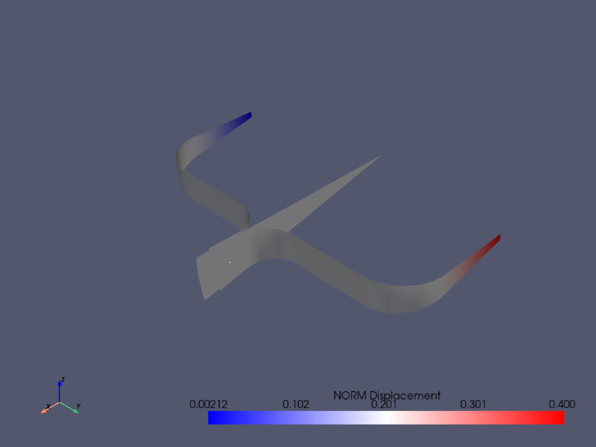
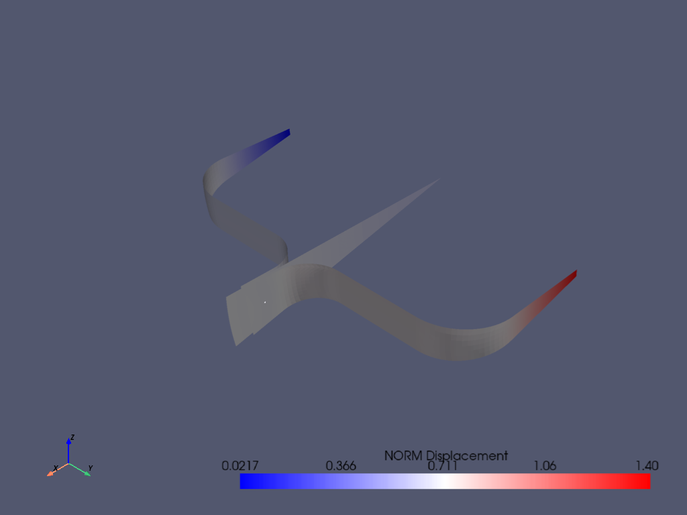

Note
Go to the end to download the full example code.
Running an input file - spotweld SHELL181 example#
This MAPDL example demonstrates how to model spot welding on three thin sheets of metal. Here, the full input file is simply run using the PyMAPDL interface.
Using the following commands, you can directly use an APDL script within a PyMAPDL session with the following commands:
Script initialization#
from ansys.mapdl.core import launch_mapdl
from ansys.mapdl.core.examples.downloads import download_example_data
mapdl = launch_mapdl()
Download and run an MAPDL script#
spotweld_data = download_example_data(
filename="spotweld.inp", directory="pymapdl/spotweld"
)
mapdl.input(spotweld_data)
"\n /INPUT FILE= LINE= 0\n *****MAPDL VERIFICATION RUN ONLY*****\n DO NOT USE RESULTS FOR PRODUCTION\n\n ***** MAPDL ANALYSIS DEFINITION (PREP7) *****\n\n NUMBER KEY SET TO 0 -1=NONE 0=BOTH 1=COLOR 2=NUMBER\n\n AREA NUMBERING KEY = 1\n\n KEYPOINT 1 X,Y,Z= 2.00000 10.0000 0.00000 IN CSYS= 0\n\n KEYPOINT 2 X,Y,Z= 10.0000 10.0000 0.00000 IN CSYS= 0\n\n KEYPOINT 3 X,Y,Z= 10.0000 0.150000 0.00000 IN CSYS= 0\n\n KEYPOINT 4 X,Y,Z= 14.0000 0.150000 0.00000 IN CSYS= 0\n\n LINE CONNECTS KEYPOINTS 1 2\n LINE NO.= 1 KP1= 1 TAN1= -1.0000 0.0000 0.0000\n KP2= 2 TAN2= 1.0000 0.0000 0.0000\n\n LINE CONNECTS KEYPOINTS 2 3\n LINE NO.= 2 KP1= 2 TAN1= 0.0000 1.0000 0.0000\n KP2= 3 TAN2= 0.0000 -1.0000 0.0000\n\n LINE CONNECTS KEYPOINTS 3 4\n LINE NO.= 3 KP1= 3 TAN1= -1.0000 0.0000 0.0000\n KP2= 4 TAN2= 1.0000 0.0000 0.0000\n\n FILLET BETWEEN LINES 1 2 RADIUS= 3.0000 \n CENTER KEYPOINT= 0\n LINE NO.= 4 KP1= 5 TAN1= -1.0000 0.0000 0.0000\n KP2= 6 TAN2= 0.0000 -1.0000 0.0000\n\n FILLET BETWEEN LINES 2 3 RADIUS= 2.0000 \n CENTER KEYPOINT= 0\n LINE NO.= 5 KP1= 7 TAN1= 0.0000 1.0000 0.0000\n KP2= 8 TAN2= 1.0000 0.0000 0.0000\n\n KEYPOINT 9 X,Y,Z= 0.00000 0.00000 0.00000 IN CSYS= 0\n\n KEYPOINT 10 X,Y,Z= 11.0000 0.00000 0.00000 IN CSYS= 0\n\n KEYPOINT 11 X,Y,Z= 15.0000 0.00000 0.00000 IN CSYS= 0\n\n LINE CONNECTS KEYPOINTS 9 10\n LINE NO.= 6 KP1= 9 TAN1= -1.0000 0.0000 0.0000\n KP2= 10 TAN2= 1.0000 0.0000 0.0000\n\n LINE CONNECTS KEYPOINTS 10 11\n LINE NO.= 7 KP1= 10 TAN1= -1.0000 0.0000 0.0000\n KP2= 11 TAN2= 1.0000 0.0000 0.0000\n\n KEYPOINT 12 X,Y,Z= 0.00000 10.0000 0.00000 IN CSYS= 0\n\n SELECT FOR ITEM=LINE COMPONENT= \n IN RANGE 6 TO 7 STEP 1\n\n 2 LINES (OF 7 DEFINED) SELECTED BY LSEL COMMAND.\n\n ROTATE LINES 6, 7,\n ABOUT THE AXIS DEFINED BY KEYPOINTS 9 12\n DEGREES OF ARC= 12.00 NUMBER OF SEGMENTS= 1\n\n SELECT FOR ITEM=LINE COMPONENT= \n IN RANGE 1 TO 5 STEP 1\n\n 5 LINES (OF 11 DEFINED) SELECTED BY LSEL COMMAND.\n\n ROTATE LINES 1, 2, 3, 4, 5,\n ABOUT THE AXIS DEFINED BY KEYPOINTS 9 12\n DEGREES OF ARC= 12.00 NUMBER OF SEGMENTS= 1\n\n REVERSE THE NORMAL DIRECTION OF AREA(S) 1\n AND MAKE ANY AREA ELEMENTS CONSISTENT WITH THE NEW NORMAL DIRECTION(S).\n\n REVERSE THE NORMAL DIRECTION OF AREA(S) 2\n AND MAKE ANY AREA ELEMENTS CONSISTENT WITH THE NEW NORMAL DIRECTION(S).\n\n SELECT FOR ITEM=AREA COMPONENT= \n IN RANGE 3 TO 7 STEP 1\n\n 5 AREAS (OF 7 DEFINED) SELECTED BY ASEL COMMAND.\n\n SYMMETRY TRANSFORMATION OF AREAS USING COMPONENT Y \n SET IS ALL SELECTED AREAS \n\n SELECT ALL ENTITIES OF TYPE= ALL AND BELOW\n\n GENERATE HARD POINT ON AREA 7 WITH X,Y,Z= 12.9000 0.150000 -1.36000 IN CSYS= 0\n ASSIGN TO HARD POINT 33\n\n HARDPOINT 33 X,Y,Z= 12.9000 0.150000 -1.36000 IN CSYS= 0\n\n view point for window 1 1.0000 1.0000 1.0000 \n\n PLOT AREAS FROM 1 TO 12 BY 1\n\n CUMULATIVE DISPLAY NUMBER 1 WRITTEN TO FILE - RASTER MODE.\n DISPLAY TITLE= \n \n\n PLOT LINES FROM 1 TO 38 BY 1\n\n CUMULATIVE DISPLAY NUMBER 1 WRITTEN TO FILE - RASTER MODE.\n DISPLAY TITLE= \n \n\n PLOT KEY POINTS FROM 1 TO 33 BY 1\n\n CUMULATIVE DISPLAY NUMBER 1 WRITTEN TO FILE - RASTER MODE.\n DISPLAY TITLE= \n \n\n ELEMENT TYPE 1 IS SHELL181 4-NODE SHELL \n KEYOPT( 1- 6)= 0 0 0 0 0 0\n KEYOPT( 7-12)= 0 0 0 0 0 0\n KEYOPT(13-18)= 0 0 0 0 0 0\n\n CURRENT NODAL DOF SET IS UX UY UZ ROTX ROTY ROTZ\n THREE-DIMENSIONAL MODEL\n\n REAL CONSTANT SET 1 ITEMS 1 TO 6\n 0.15000 0.0000 0.0000 0.0000 0.0000 0.0000 \n\n REAL CONSTANT SET 2 ITEMS 1 TO 6\n 0.10000 0.0000 0.0000 0.0000 0.0000 0.0000 \n\n MATERIAL 1 EX = 0.3000000E+08 \n\n MATERIAL 1 PRXY = 0.3000000 \n\n DEFAULT ELEMENT DIVISIONS PER LINE BASED ON ELEMENT SIZE = 0.250 \n\n REAL CONSTANT NUMBER= 1\n\n GENERATE NODES AND ELEMENTS\n IN AREAS 1 TO 1 IN STEPS OF 1\n ** AREA 1 MESHED WITH 192 QUADRILATERALS, 2 TRIANGLES **\n\n NUMBER OF AREAS MESHED = 1\n MAXIMUM NODE NUMBER = 243\n MAXIMUM ELEMENT NUMBER = 194\n\n GENERATE NODES AND ELEMENTS\n IN AREAS 2 TO 2 IN STEPS OF 1\n ** AREA 2 MESHED WITH 177 QUADRILATERALS, 1 TRIANGLES **\n\n NUMBER OF AREAS MESHED = 1\n MAXIMUM NODE NUMBER = 438\n MAXIMUM ELEMENT NUMBER = 372\n\n REAL CONSTANT NUMBER= 2\n\n SELECT FOR ITEM=AREA COMPONENT= \n IN RANGE 3 TO 12 STEP 1\n\n 10 AREAS (OF 12 DEFINED) SELECTED BY ASEL COMMAND.\n\n GENERATE NODES AND ELEMENTS IN ALL SELECTED AREAS \n ** AREA 4 MESHED WITH 123 QUADRILATERALS, 1 TRIANGLES **\n ** AREA 7 MESHED WITH 100 QUADRILATERALS, 1 TRIANGLES **\n ** AREA 9 MESHED WITH 121 QUADRILATERALS, 1 TRIANGLES **\n ** AREA 12 MESHED WITH 91 QUADRILATERALS, 1 TRIANGLES **\n\n NUMBER OF AREAS MESHED = 10\n MAXIMUM NODE NUMBER = 1963\n MAXIMUM ELEMENT NUMBER = 1723\n\n SELECT FOR ITEM=LINE COMPONENT= \n IN RANGE 1 TO 9 STEP 1\n\n 9 LINES (OF 38 DEFINED) SELECTED BY LSEL COMMAND.\n\n ALSO SELECT FOR ITEM=LINE COMPONENT= \n IN RANGE 12 TO 17 STEP 1\n\n 15 LINES (OF 38 DEFINED) SELECTED BY LSEL COMMAND.\n\n ALSO SELECT FOR ITEM=LINE COMPONENT= \n IN RANGE 26 TO 38 STEP 3\n\n 20 LINES (OF 38 DEFINED) SELECTED BY LSEL COMMAND.\n\n ALSO SELECT FOR ITEM=LINE COMPONENT= \n IN RANGE 24 TO 36 STEP 3\n\n 25 LINES (OF 38 DEFINED) SELECTED BY LSEL COMMAND.\n\n SELECT ALL NODES (INTERIOR TO LINE, AND AT KEYPOINTS)\n RELATED TO SELECTED LINE SET.\n\n 446 NODES (OF 1963 DEFINED) SELECTED FROM \n 25 SELECTED LINES BY NSLL COMMAND.\n\n SET SNAP FOR WORKING PLANE TO 0.50000E-01\n\n SET GRID SPACING FOR WORKING PLANE TO 0.10000 \n\n SET WP COORDINATE SYSTEM TYPE TO CARTESIAN.\n\n TURN WORKING PLANE GRID AND TRIAD ON.\n\n SET SNAP ANGLE FOR WORKING PLANE TO 5.0000 \n\n SET WORKING PLANE'S TOLERANCE TO 0.30000E-02\n\n *** NOTE *** CP = 0.000 TIME= 00:00:00\n The Working Plane cannot be displayed in NON-UI mode. \n Command Ignored. \n\n ROTATE WORKING PLANE \n 0.0000 DEGREES ABOUT WORKING PLANE'S Z AXIS (X TOWARDS Y)\n -90.000 DEGREES ABOUT WORKING PLANE'S X AXIS (Y TOWARDS Z)\n 0.0000 DEGREES ABOUT WORKING PLANE'S Y AXIS (Z TOWARDS X)\n\n ACTIVE COORDINATE SYSTEM SET TO 11 (CYLINDRICAL)\n WITH PARAMETERS 1.000 AND 1.000 \n\n ACTIVE COORDINATE SYSTEM SET TO 11 (CYLINDRICAL)\n\n IN COORDINATE SYSTEM 11, ROTATE ALL SELECTED NODES.\n\n SPECIFIED CONSTRAINT UY FOR SELECTED NODES 1 TO 1963 BY 1\n REAL= 0.00000000 IMAG= 0.00000000 \n\n SPECIFIED CONSTRAINT ROTX FOR SELECTED NODES 1 TO 1963 BY 1\n REAL= 0.00000000 IMAG= 0.00000000 \n\n ACTIVE COORDINATE SYSTEM SET TO 0 (CARTESIAN) \n\n SELECT FOR ITEM=LINE COMPONENT= \n IN RANGE 23 TO 23 STEP 1\n\n 1 LINES (OF 38 DEFINED) SELECTED BY LSEL COMMAND.\n\n SELECT ALL NODES (INTERIOR TO LINE, AND AT KEYPOINTS)\n RELATED TO SELECTED LINE SET.\n\n 3 NODES (OF 1963 DEFINED) SELECTED FROM \n 1 SELECTED LINES BY NSLL COMMAND.\n\n SPECIFIED CONSTRAINT UZ FOR SELECTED NODES 1 TO 1963 BY 1\n REAL= 0.00000000 IMAG= 0.00000000 \n\n SELECT FOR ITEM=LINE COMPONENT= \n IN RANGE 17 TO 17 STEP 1\n\n 1 LINES (OF 38 DEFINED) SELECTED BY LSEL COMMAND.\n\n SELECT ALL NODES (INTERIOR TO LINE, AND AT KEYPOINTS)\n RELATED TO SELECTED LINE SET.\n\n 3 NODES (OF 1963 DEFINED) SELECTED FROM \n 1 SELECTED LINES BY NSLL COMMAND.\n\n SPECIFIED CONSTRAINT UZ FOR SELECTED NODES 1 TO 1963 BY 1\n REAL= 4.00000000 IMAG= 0.00000000 \n\n SELECT ALL ENTITIES OF TYPE= ALL AND BELOW\n\n view point for window 1 1.0000 1.0000 1.0000 \n\n ELEMENT DISPLAYS USING REAL CONSTANT OR SECTION DATA WITH FACTOR 1.00\n\n SELECT FOR ITEM=KP COMPONENT= \n IN RANGE 33 TO 33 STEP 1\n\n 1 KEYPOINTS (OF 33 DEFINED) SELECTED BY KSEL COMMAND.\n\n SELECT NODES ASSOCIATED WITH SELECTED KEYPOINTS\n\n 1 NODES (OF 1963 DEFINED) SELECTED FROM\n 1 SELECTED KEYPOINTS BY NSLK COMMAND.\n\n *GET SW_NODE FROM NODE ITEM=NUM MAX VALUE= 1199.00000 \n\n\n ***** ROUTINE COMPLETED ***** CP = 0.000\n\n\n\n ***** MAPDL SOLUTION ROUTINE *****\n\n SELECT ALL ENTITIES OF TYPE= ALL AND BELOW\n\n LARGE DEFORMATION ANALYSIS\n\n TIME= 4.0000 \n\n USE 10 SUBSTEPS INITIALLY THIS LOAD STEP FOR ALL DEGREES OF FREEDOM\n FOR AUTOMATIC TIME STEPPING:\n USE 25 SUBSTEPS AS A MAXIMUM\n USE 5 SUBSTEPS AS A MINIMUM\n\n WRITE ALL ITEMS TO THE DATABASE WITH A FREQUENCY OF ALL \n FOR ALL APPLICABLE ENTITIES\n\n FINISH SOLUTION PROCESSING\n\n\n ***** ROUTINE COMPLETED ***** CP = 0.000\n\n\n\n SELECT ALL ENTITIES OF TYPE= ALL AND BELOW\n *****MAPDL VERIFICATION RUN ONLY*****\n DO NOT USE RESULTS FOR PRODUCTION\n\n ***** MAPDL ANALYSIS DEFINITION (PREP7) *****\n\n MATERIAL 2 EX = 0.2800000E+08 \n\n MATERIAL 2 PRXY = 0.3000000 \n \n INPUT SECTION ID NUMBER 2\n INPUT SECTION TYPE BEAM\n INPUT BEAM SECTION SUBTYPE Circular Solid \n INPUT BEAM SECTION NAME \n \n SECTION ID NUMBER IS: 2\n BEAM SECTION TYPE IS: Circular Solid \n BEAM SECTION NAME IS: \n COMPUTED BEAM SECTION DATA SUMMARY:\n Area = 0.19620 \n Iyy = 0.30616E-02\n Iyz =-0.67763E-20\n Izz = 0.30616E-02\n Warping Constant = 0.66667E-36\n Torsion Constant = 0.61233E-02\n Centroid Y =-0.52498E-17\n Centroid Z = 0.11328E-16\n Shear Center Y = 0.18601E-17\n Shear Center Z = 0.66798E-17\n Shear Correction-xy = 0.85691 \n Shear Correction-yz = 0.12526E-14\n Shear Correction-xz = 0.85691 \n \n Beam Section is offset to CENTROID of cross section\n\n ELEMENT TYPE 2 IS BEAM188 3-D 2-NODE BEAM \n KEYOPT( 1- 6)= 0 0 0 0 0 0\n KEYOPT( 7-12)= 0 0 0 0 0 0\n KEYOPT(13-18)= 0 0 0 0 0 0\n\n CURRENT NODAL DOF SET IS UX UY UZ ROTX ROTY ROTZ\n THREE-DIMENSIONAL MODEL\n\n ELEMENT TYPE SET TO 2\n\n MATERIAL NUMBER SET TO 2\n\n SECTION ID NUMBER= 2\n\n ****************************************\n *****CREATE NEW SPOT WELD SET: SWELD1 \n GENERATE SPOT WELD BETWEEN SURFACE (7 ) AND SURFACE (2 ).\n THE FIRST SPOT WELD NODE = 1199\n THE SECOND SPOT WELD NODE WILL BE CREATED\n SPOTWELD RADIUS= 0.50000 \n SEARCHING DISTANCE= 2.0000 \n DEFORMABLE SPOT WELD WILL BE GENERATED. \n CREATED ELEMENT TYPE 3 AS TARGE170\n CREATED ELEMENT TYPE 4 AS CONTA174\n\n REAL CONSTANT SETS 3 AND 4 ARE CREATED\n WITH INFLUENCE RADIUS = 0.50000 AND PINBALL RANGE= 0.50000 \n\n NUMBER OF CONTACT ELEMENTS FOR BOTH SURFACES GENERATED= 275\n\n *** NOTE *** CP = 0.000 TIME= 00:00:00\n Rotational degrees of freedom ROTX+ROTY+ROTZ have been activated for \n pilot node 1964. \n\n *** NOTE *** CP = 0.000 TIME= 00:00:00\n Rotational degrees of freedom ROTX+ROTY+ROTZ have been activated for \n pilot node 1966. \n NEW ELEMENTS 278 ARE CREATED FOR SPOTWELD\n *******END OF SPOT WELD CREATION********\n\n ****************************************\n *****ADD MORE SPOT WELD SURFACES TO SET: SWELD1 \n SEARCHING DISTANCE= 2.0000 ,\n ADD NEW SPOT WELD SURFACE: 12 \n\n NUMBER OF CONTACT ELEMENTS FOR BOTH SURFACES GENERATED= 92\n\n *** NOTE *** CP = 0.000 TIME= 00:00:00\n Rotational degrees of freedom ROTX+ROTY+ROTZ have been activated for \n pilot node 1967. \n\n\n ***** ROUTINE COMPLETED ***** CP = 0.000\n\n\n\n ***** MAPDL SOLUTION ROUTINE *****\n\n SELECT ALL ENTITIES OF TYPE= ALL AND BELOW\n\n LARGE DEFORMATION ANALYSIS\n\n TIME= 4.0000 \n\n USE 10 SUBSTEPS INITIALLY THIS LOAD STEP FOR ALL DEGREES OF FREEDOM\n FOR AUTOMATIC TIME STEPPING:\n USE 25 SUBSTEPS AS A MAXIMUM\n USE 5 SUBSTEPS AS A MINIMUM\n\n WRITE ALL ITEMS TO THE DATABASE WITH A FREQUENCY OF ALL \n FOR ALL APPLICABLE ENTITIES\n\n ***** MAPDL SOLVE COMMAND *****\n\n *** NOTE *** CP = 0.000 TIME= 00:00:00\n There is no title defined for this analysis. \n\n *** SELECTION OF ELEMENT TECHNOLOGIES FOR APPLICABLE ELEMENTS ***\n ---GIVE SUGGESTIONS ONLY---\n\n ELEMENT TYPE 1 IS SHELL181. IT IS ASSOCIATED WITH ELASTOPLASTIC \n MATERIALS ONLY. KEYOPT(8)=2 IS SUGGESTED AND KEYOPT(3)=2 IS SUGGESTED FOR\n HIGHER ACCURACY OF MEMBRANE STRESSES; OTHERWISE, KEYOPT(3)=0 IS SUGGESTED.\n\n ELEMENT TYPE 2 IS BEAM188 . KEYOPT(3)=2 IS ALWAYS SUGGESTED.\n\n ELEMENT TYPE 2 IS BEAM188 . KEYOPT(15) IS ALREADY SET AS SUGGESTED.\n\n\n *****MAPDL VERIFICATION RUN ONLY*****\n DO NOT USE RESULTS FOR PRODUCTION\n\n S O L U T I O N O P T I O N S\n\n PROBLEM DIMENSIONALITY. . . . . . . . . . . . .3-D \n DEGREES OF FREEDOM. . . . . . UX UY UZ ROTX ROTY ROTZ\n ANALYSIS TYPE . . . . . . . . . . . . . . . . .STATIC (STEADY-STATE)\n NONLINEAR GEOMETRIC EFFECTS . . . . . . . . . .ON\n NEWTON-RAPHSON OPTION . . . . . . . . . . . . .PROGRAM CHOSEN \n GLOBALLY ASSEMBLED MATRIX . . . . . . . . . . .SYMMETRIC \n\n *** NOTE *** CP = 0.000 TIME= 00:00:00\n SHELL181 and SHELL281 will not support real constant input at a future \n release. Please move to section input. \n\n *** NOTE *** CP = 0.000 TIME= 00:00:00\n This nonlinear analysis defaults to using the full Newton-Raphson \n solution procedure. This can be modified using the NROPT command. \n\n *** NOTE *** CP = 0.000 TIME= 00:00:00\n The conditions for direct assembly have been met. No .emat or .erot \n files will be produced. \n\n *** NOTE *** CP = 0.000 TIME= 00:00:00\n Internal nodes from 1968 to 1970 are created. \n 3 internal nodes are used for handling degrees of freedom on pilot \n nodes of rigid target surfaces. \n\n *** NOTE *** CP = 0.000 TIME= 00:00:00\n Internal nodes from 1968 to 1970 are created. \n 3 internal nodes are used for handling degrees of freedom on pilot \n nodes of rigid target surfaces. \n\n *** NOTE *** CP = 0.000 TIME= 00:00:00\n Force-distributed-surface identified by real constant set 3 and \n contact element type 4 has been set up. The pilot node 1964 is used \n to apply the force which connects to other element 2095. Internal MPC \n will be built. \n The used degrees of freedom set is UX UY UZ ROTX ROTY ROTZ\n User defined influence range PINB 0.50000 \n ****************************************\n \n\n *** NOTE *** CP = 0.000 TIME= 00:00:00\n Force-distributed-surface identified by real constant set 4 and \n contact element type 4 has been set up. The pilot node 1966 is used \n to apply the force which connects to other element 2001. Internal MPC \n will be built. \n The used degrees of freedom set is UX UY UZ ROTX ROTY ROTZ\n User defined influence range PINB 0.50000 \n ****************************************\n \n\n *** NOTE *** CP = 0.000 TIME= 00:00:00\n Force-distributed-surface identified by real constant set 5 and \n contact element type 4 has been set up. The pilot node 1967 is used \n to apply the force which connects to other element 2001. Internal MPC \n will be built. \n The used degrees of freedom set is UX UY UZ ROTX ROTY ROTZ\n User defined influence range PINB 0.50000 \n ****************************************\n \n \n \n\n *** NOTE *** CP = 0.000 TIME= 00:00:00\n Internal nodes from 1968 to 1970 are created. \n 3 internal nodes are used for handling degrees of freedom on pilot \n nodes of rigid target surfaces. \n\n \n \n D I S T R I B U T E D D O M A I N D E C O M P O S E R\n \n ...Number of elements: 2095\n ...Number of nodes: 1970\n ...Decompose to 0 CPU domains\n ...Element load balance ratio = 0.000\n\n\n L O A D S T E P O P T I O N S\n\n LOAD STEP NUMBER. . . . . . . . . . . . . . . . 1\n TIME AT END OF THE LOAD STEP. . . . . . . . . . 4.0000 \n AUTOMATIC TIME STEPPING . . . . . . . . . . . . ON\n INITIAL NUMBER OF SUBSTEPS . . . . . . . . . 10\n MAXIMUM NUMBER OF SUBSTEPS . . . . . . . . . 25\n MINIMUM NUMBER OF SUBSTEPS . . . . . . . . . 5\n MAXIMUM NUMBER OF EQUILIBRIUM ITERATIONS. . . . 15\n STEP CHANGE BOUNDARY CONDITIONS . . . . . . . . NO\n STRESS-STIFFENING . . . . . . . . . . . . . . . ON\n TERMINATE ANALYSIS IF NOT CONVERGED . . . . . .YES (EXIT) \n CONVERGENCE CONTROLS. . . . . . . . . . . . . .USE DEFAULTS\n PRINT OUTPUT CONTROLS . . . . . . . . . . . . .NO PRINTOUT\n DATABASE OUTPUT CONTROLS\n ITEM FREQUENCY COMPONENT\n ALL ALL \n\n\n *** NOTE *** CP = 0.000 TIME= 00:00:00\n Force-distributed-surface identified by real constant set 3 and \n contact element type 4 has been set up. The pilot node 1964 is used \n to apply the force which connects to other element 2095. Internal MPC \n will be built. \n The used degrees of freedom set is UX UY UZ ROTX ROTY ROTZ\n User defined influence range PINB 0.50000 \n ****************************************\n \n\n *** NOTE *** CP = 0.000 TIME= 00:00:00\n Predictor is ON by default for structural elements with rotational \n degrees of freedom. Use the PRED,OFF command to turn the predictor \n OFF if it adversely affects the convergence. \n\n\n Range of element maximum matrix coefficients in global coordinates\n Maximum = 36623388.3 at element 0. \n Minimum = 1024152.32 at element 0. \n\n *** ELEMENT MATRIX FORMULATION TIMES\n TYPE NUMBER ENAME TOTAL CP AVE CP\n\n 1 1723 SHELL181 0.000 0.000000\n 2 2 BEAM188 0.000 0.000000\n 3 3 TARGE170 0.000 0.000000\n 4 367 CONTA174 0.000 0.000000\n Time at end of element matrix formulation CP = 0. \n\n ALL CURRENT MAPDL DATA WRITTEN TO FILE NAME= \n FOR POSSIBLE RESUME FROM THIS POINT\n FORCE CONVERGENCE VALUE = 0.3958E+06 CRITERION= 1979. \n MOMENT CONVERGENCE VALUE = 0.6913E+05 CRITERION= 345.6 \n\n DISTRIBUTED SPARSE MATRIX DIRECT SOLVER.\n Number of equations = 10880, Maximum wavefront = 0\n Memory available (MB) = 0.0 , Memory required (MB) = 0.0 \n\n Distributed sparse solver maximum pivot= 0 at node 0 . \n Distributed sparse solver minimum pivot= 0 at node 0 . \n Distributed sparse solver minimum pivot in absolute value= 0 at node 0 \n . \n DISP CONVERGENCE VALUE = 0.4000 CRITERION= 0.2000E-01\n EQUIL ITER 1 COMPLETED. NEW TRIANG MATRIX. MAX DOF INC= 0.4000 \n DISP CONVERGENCE VALUE = 0.4000 CRITERION= 0.2000E-01\n LINE SEARCH PARAMETER = 1.000 SCALED MAX DOF INC = 0.4000 \n FORCE CONVERGENCE VALUE = 1964. CRITERION= 11.71 \n MOMENT CONVERGENCE VALUE = 11.84 CRITERION= 0.3208 \n EQUIL ITER 2 COMPLETED. NEW TRIANG MATRIX. MAX DOF INC= -0.9830E-02\n DISP CONVERGENCE VALUE = 0.2164E-02 CRITERION= 0.2000E-01 <<< CONVERGED\n LINE SEARCH PARAMETER = 0.9997 SCALED MAX DOF INC = -0.9827E-02\n FORCE CONVERGENCE VALUE = 8.931 CRITERION= 11.46 <<< CONVERGED\n MOMENT CONVERGENCE VALUE = 0.3297 CRITERION= 0.2967 \n EQUIL ITER 3 COMPLETED. NEW TRIANG MATRIX. MAX DOF INC= 0.8728E-03\n DISP CONVERGENCE VALUE = 0.8011E-03 CRITERION= 0.2000E-01 <<< CONVERGED\n LINE SEARCH PARAMETER = 1.000 SCALED MAX DOF INC = 0.8728E-03\n FORCE CONVERGENCE VALUE = 0.3489 CRITERION= 11.43 <<< CONVERGED\n MOMENT CONVERGENCE VALUE = 0.2506E-01 CRITERION= 0.2967 <<< CONVERGED\n >>> SOLUTION CONVERGED AFTER EQUILIBRIUM ITERATION 3\n\n *** ELEMENT RESULT CALCULATION TIMES\n TYPE NUMBER ENAME TOTAL CP AVE CP\n\n 1 1723 SHELL181 0.000 0.000000\n 2 2 BEAM188 0.000 0.000000\n 4 367 CONTA174 0.000 0.000000\n\n *** NODAL LOAD CALCULATION TIMES\n TYPE NUMBER ENAME TOTAL CP AVE CP\n\n 1 1723 SHELL181 0.000 0.000000\n 2 2 BEAM188 0.000 0.000000\n 4 367 CONTA174 0.000 0.000000\n *** LOAD STEP 1 SUBSTEP 1 COMPLETED. CUM ITER = 3\n *** TIME = 0.400000 TIME INC = 0.400000 \n *** AUTO STEP TIME: NEXT TIME INC = 0.40000 UNCHANGED\n\n FORCE CONVERGENCE VALUE = 4120. CRITERION= 38.59 \n MOMENT CONVERGENCE VALUE = 39.51 CRITERION= 0.9015 \n DISP CONVERGENCE VALUE = 0.1057E-01 CRITERION= 0.2000E-01 <<< CONVERGED\n EQUIL ITER 1 COMPLETED. NEW TRIANG MATRIX. MAX DOF INC= 0.1268E-01\n DISP CONVERGENCE VALUE = 0.1057E-01 CRITERION= 0.2000E-01 <<< CONVERGED\n LINE SEARCH PARAMETER = 1.000 SCALED MAX DOF INC = 0.1268E-01\n FORCE CONVERGENCE VALUE = 38.62 CRITERION= 41.26 <<< CONVERGED\n MOMENT CONVERGENCE VALUE = 2.326 CRITERION= 0.9637 \n EQUIL ITER 2 COMPLETED. NEW TRIANG MATRIX. MAX DOF INC= -0.4855E-02\n DISP CONVERGENCE VALUE = 0.4855E-02 CRITERION= 0.2000E-01 <<< CONVERGED\n LINE SEARCH PARAMETER = 1.000 SCALED MAX DOF INC = -0.4855E-02\n FORCE CONVERGENCE VALUE = 4.813 CRITERION= 40.60 <<< CONVERGED\n MOMENT CONVERGENCE VALUE = 0.1836 CRITERION= 0.9483 <<< CONVERGED\n\n *** WARNING *** CP = 0.000 TIME= 00:00:00\n A reference moment value times the tolerance is used by the \n Newton-Raphson method for checking convergence. The calculated \n reference MOMENT CONVERGENCE VALUE = 99.5782756 is less than a \n threshold. This threshold is internally calculated. You can \n overwrite it by specifying MINREF on the CNVTOL command. Check \n results carefully. \n >>> SOLUTION CONVERGED AFTER EQUILIBRIUM ITERATION 2\n *** LOAD STEP 1 SUBSTEP 2 COMPLETED. CUM ITER = 5\n *** TIME = 0.800000 TIME INC = 0.400000 \n *** AUTO TIME STEP: NEXT TIME INC = 0.60000 INCREASED (FACTOR = 1.5000)\n\n FORCE CONVERGENCE VALUE = 8045. CRITERION= 108.1 \n MOMENT CONVERGENCE VALUE = 98.29 CRITERION= 2.526 \n DISP CONVERGENCE VALUE = 0.2578E-01 CRITERION= 0.3000E-01 <<< CONVERGED\n EQUIL ITER 1 COMPLETED. NEW TRIANG MATRIX. MAX DOF INC= -0.2578E-01\n DISP CONVERGENCE VALUE = 0.2578E-01 CRITERION= 0.3000E-01 <<< CONVERGED\n LINE SEARCH PARAMETER = 1.000 SCALED MAX DOF INC = -0.2578E-01\n FORCE CONVERGENCE VALUE = 199.4 CRITERION= 110.2 \n MOMENT CONVERGENCE VALUE = 6.204 CRITERION= 2.575 \n EQUIL ITER 2 COMPLETED. NEW TRIANG MATRIX. MAX DOF INC= -0.6270E-01\n DISP CONVERGENCE VALUE = 0.5964E-01 CRITERION= 0.3000E-01\n LINE SEARCH PARAMETER = 0.9513 SCALED MAX DOF INC = -0.5964E-01\n FORCE CONVERGENCE VALUE = 27.27 CRITERION= 109.0 <<< CONVERGED\n MOMENT CONVERGENCE VALUE = 0.6795 CRITERION= 2.545 <<< CONVERGED\n EQUIL ITER 3 COMPLETED. NEW TRIANG MATRIX. MAX DOF INC= 0.8559E-02\n DISP CONVERGENCE VALUE = 0.8559E-02 CRITERION= 0.3000E-01 <<< CONVERGED\n LINE SEARCH PARAMETER = 1.000 SCALED MAX DOF INC = 0.8559E-02\n FORCE CONVERGENCE VALUE = 0.6910 CRITERION= 108.9 <<< CONVERGED\n MOMENT CONVERGENCE VALUE = 0.4567E-01 CRITERION= 2.544 <<< CONVERGED\n >>> SOLUTION CONVERGED AFTER EQUILIBRIUM ITERATION 3\n *** LOAD STEP 1 SUBSTEP 3 COMPLETED. CUM ITER = 8\n *** TIME = 1.40000 TIME INC = 0.600000 \n *** AUTO TIME STEP: NEXT TIME INC = 0.80000 INCREASED (FACTOR = 1.3333)\n\n FORCE CONVERGENCE VALUE = 0.1682E+05 CRITERION= 241.8 \n MOMENT CONVERGENCE VALUE = 225.9 CRITERION= 5.648 \n DISP CONVERGENCE VALUE = 0.2336 CRITERION= 0.4000E-01\n EQUIL ITER 1 COMPLETED. NEW TRIANG MATRIX. MAX DOF INC= -0.2336 \n DISP CONVERGENCE VALUE = 0.2317 CRITERION= 0.4000E-01\n LINE SEARCH PARAMETER = 0.9920 SCALED MAX DOF INC = -0.2317 \n FORCE CONVERGENCE VALUE = 672.5 CRITERION= 236.0 \n MOMENT CONVERGENCE VALUE = 15.88 CRITERION= 5.512 \n EQUIL ITER 2 COMPLETED. NEW TRIANG MATRIX. MAX DOF INC= 0.3782E-01\n DISP CONVERGENCE VALUE = 0.3782E-01 CRITERION= 0.4000E-01 <<< CONVERGED\n LINE SEARCH PARAMETER = 1.000 SCALED MAX DOF INC = 0.3782E-01\n FORCE CONVERGENCE VALUE = 36.62 CRITERION= 233.9 <<< CONVERGED\n MOMENT CONVERGENCE VALUE = 1.442 CRITERION= 5.464 <<< CONVERGED\n >>> SOLUTION CONVERGED AFTER EQUILIBRIUM ITERATION 2\n *** LOAD STEP 1 SUBSTEP 4 COMPLETED. CUM ITER = 10\n *** TIME = 2.20000 TIME INC = 0.800000 \n *** AUTO STEP TIME: NEXT TIME INC = 0.80000 UNCHANGED\n\n FORCE CONVERGENCE VALUE = 0.2084E+05 CRITERION= 402.7 \n MOMENT CONVERGENCE VALUE = 274.8 CRITERION= 9.407 \n DISP CONVERGENCE VALUE = 0.7088E-01 CRITERION= 0.4000E-01\n EQUIL ITER 1 COMPLETED. NEW TRIANG MATRIX. MAX DOF INC= 0.7088E-01\n DISP CONVERGENCE VALUE = 0.7088E-01 CRITERION= 0.4000E-01\n LINE SEARCH PARAMETER = 1.000 SCALED MAX DOF INC = 0.7088E-01\n FORCE CONVERGENCE VALUE = 443.6 CRITERION= 394.6 \n MOMENT CONVERGENCE VALUE = 17.17 CRITERION= 9.217 \n EQUIL ITER 2 COMPLETED. NEW TRIANG MATRIX. MAX DOF INC= 0.2122E-01\n DISP CONVERGENCE VALUE = 0.2122E-01 CRITERION= 0.4000E-01 <<< CONVERGED\n LINE SEARCH PARAMETER = 1.000 SCALED MAX DOF INC = 0.2122E-01\n FORCE CONVERGENCE VALUE = 76.59 CRITERION= 392.1 <<< CONVERGED\n MOMENT CONVERGENCE VALUE = 1.390 CRITERION= 9.160 <<< CONVERGED\n >>> SOLUTION CONVERGED AFTER EQUILIBRIUM ITERATION 2\n *** LOAD STEP 1 SUBSTEP 5 COMPLETED. CUM ITER = 12\n *** TIME = 3.00000 TIME INC = 0.800000 \n *** AUTO TIME STEP: NEXT TIME INC = 0.50000 DECREASED (FACTOR = 0.6250)\n\n FORCE CONVERGENCE VALUE = 0.1149E+05 CRITERION= 509.9 \n MOMENT CONVERGENCE VALUE = 132.1 CRITERION= 11.91 \n DISP CONVERGENCE VALUE = 0.1893E-01 CRITERION= 0.4000E-01 <<< CONVERGED\n EQUIL ITER 1 COMPLETED. NEW TRIANG MATRIX. MAX DOF INC= 0.1072 \n DISP CONVERGENCE VALUE = 0.1858E-01 CRITERION= 0.4000E-01 <<< CONVERGED\n LINE SEARCH PARAMETER = 0.9816 SCALED MAX DOF INC = 0.1052 \n FORCE CONVERGENCE VALUE = 2226. CRITERION= 499.3 \n MOMENT CONVERGENCE VALUE = 163.4 CRITERION= 11.66 \n EQUIL ITER 2 COMPLETED. NEW TRIANG MATRIX. MAX DOF INC= 0.2193E-01\n DISP CONVERGENCE VALUE = 0.8492E-02 CRITERION= 0.4000E-01 <<< CONVERGED\n LINE SEARCH PARAMETER = 1.000 SCALED MAX DOF INC = 0.2193E-01\n FORCE CONVERGENCE VALUE = 147.2 CRITERION= 499.2 <<< CONVERGED\n MOMENT CONVERGENCE VALUE = 11.69 CRITERION= 11.66 \n EQUIL ITER 3 COMPLETED. NEW TRIANG MATRIX. MAX DOF INC= 0.1789E-01\n DISP CONVERGENCE VALUE = 0.5174E-02 CRITERION= 0.4000E-01 <<< CONVERGED\n LINE SEARCH PARAMETER = 1.000 SCALED MAX DOF INC = 0.1789E-01\n FORCE CONVERGENCE VALUE = 62.35 CRITERION= 497.8 <<< CONVERGED\n MOMENT CONVERGENCE VALUE = 3.995 CRITERION= 11.63 <<< CONVERGED\n >>> SOLUTION CONVERGED AFTER EQUILIBRIUM ITERATION 3\n *** LOAD STEP 1 SUBSTEP 6 COMPLETED. CUM ITER = 15\n *** TIME = 3.50000 TIME INC = 0.500000 \n *** AUTO STEP TIME: NEXT TIME INC = 0.50000 UNCHANGED\n\n FORCE CONVERGENCE VALUE = 0.1383E+05 CRITERION= 594.2 \n MOMENT CONVERGENCE VALUE = 752.6 CRITERION= 13.88 \n DISP CONVERGENCE VALUE = 0.4343E-01 CRITERION= 0.4000E-01\n EQUIL ITER 1 COMPLETED. NEW TRIANG MATRIX. MAX DOF INC= 0.1093 \n DISP CONVERGENCE VALUE = 0.4343E-01 CRITERION= 0.4000E-01\n LINE SEARCH PARAMETER = 1.000 SCALED MAX DOF INC = 0.1093 \n FORCE CONVERGENCE VALUE = 3728. CRITERION= 580.8 \n MOMENT CONVERGENCE VALUE = 185.4 CRITERION= 13.57 \n EQUIL ITER 2 COMPLETED. NEW TRIANG MATRIX. MAX DOF INC= -0.1024 \n DISP CONVERGENCE VALUE = 0.4721E-01 CRITERION= 0.4000E-01\n LINE SEARCH PARAMETER = 0.9642 SCALED MAX DOF INC = -0.9876E-01\n FORCE CONVERGENCE VALUE = 2626. CRITERION= 566.6 \n MOMENT CONVERGENCE VALUE = 145.9 CRITERION= 13.23 \n EQUIL ITER 3 COMPLETED. NEW TRIANG MATRIX. MAX DOF INC= 0.2631E-01\n DISP CONVERGENCE VALUE = 0.1379E-01 CRITERION= 0.4000E-01 <<< CONVERGED\n LINE SEARCH PARAMETER = 1.000 SCALED MAX DOF INC = 0.2631E-01\n FORCE CONVERGENCE VALUE = 382.2 CRITERION= 564.7 <<< CONVERGED\n MOMENT CONVERGENCE VALUE = 34.38 CRITERION= 13.19 \n EQUIL ITER 4 COMPLETED. NEW TRIANG MATRIX. MAX DOF INC= -0.6483E-02\n DISP CONVERGENCE VALUE = 0.2828E-02 CRITERION= 0.4000E-01 <<< CONVERGED\n LINE SEARCH PARAMETER = 1.000 SCALED MAX DOF INC = -0.6483E-02\n FORCE CONVERGENCE VALUE = 53.20 CRITERION= 563.8 <<< CONVERGED\n MOMENT CONVERGENCE VALUE = 6.234 CRITERION= 13.17 <<< CONVERGED\n >>> SOLUTION CONVERGED AFTER EQUILIBRIUM ITERATION 4\n *** LOAD STEP 1 SUBSTEP 7 COMPLETED. CUM ITER = 19\n *** TIME = 4.00000 TIME INC = 0.500000 \n\n FINISH SOLUTION PROCESSING\n\n\n ***** ROUTINE COMPLETED ***** CP = 0.000\n\n\n"
Displacements#
# Enter post-processor
mapdl.post1()
# Plot the time step 1.
mapdl.set(1, 1)
mapdl.post_processing.plot_nodal_displacement(cmap="bwr")
# Plot the time step 3.
mapdl.set(1, 3)
mapdl.post_processing.plot_nodal_displacement(cmap="bwr")
- 
- 
Stress#
# Get the nodal and element component stress at time step 1.
mapdl.set(1, 1)
nodal_stress = mapdl.post_processing.nodal_stress_intensity()
print("Nodal stress : ", nodal_stress)
# Plot the element stress.
element_stress = mapdl.post_processing.element_stress("int")
print("Element stress : ", element_stress)
Nodal stress : [335.86245248 277.6295366 333.90655287 ... 0. 0.
0. ]
Element stress : [276.42970658 276.32777842 276.15848866 ... 0. 0.
0. ]
The stress at the contact element simulating the spot weld.
Plot the nodal stress in the Z direction.
mapdl.post_processing.plot_nodal_component_stress("z")
Get the cumulative equivalent stress and plot the von Mises stress.
eqv_stress = mapdl.post_processing.nodal_eqv_stress()
print("Cumulative equivalent stress : ", eqv_stress)
mapdl.post_processing.plot_nodal_eqv_stress()
Cumulative equivalent stress : [335.63284607 273.11461916 294.37895538 ... 0. 0.
0. ]
Stop MAPDL
mapdl.finish()
mapdl.exit()
Total running time of the script: (0 minutes 7.888 seconds)